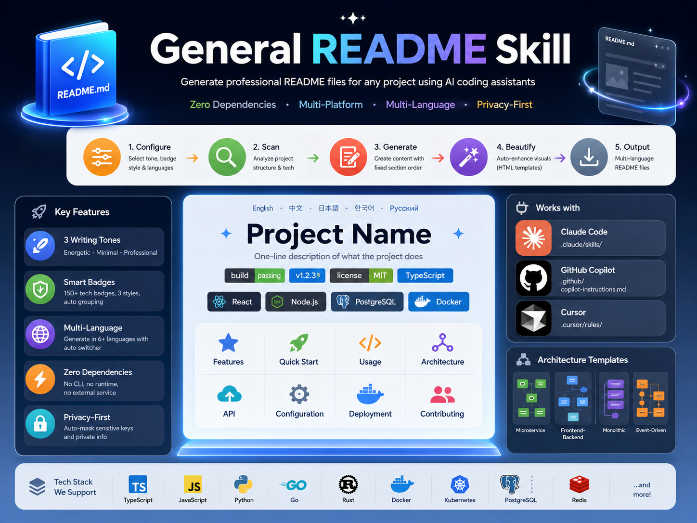

主事实源
项目文件
先扫静态事实，再写 README
它会从 package.json、脚本、目录结构、license 等静态文件里提炼语言、框架、构建方式和项目类型，而不是凭空造内容。
- 扫描项目结构
- 提取可验证信息
- 避免无根内容
General README Skill 不是 README 模板库，而是把 项目扫描、内容生成、美化和多语言输出 串成一条可复用流水线。它面向 Claude Code、GitHub Copilot、Cursor，也强调零依赖和隐私保护。

README 的价值不在“长得像样”，而在于把项目事实组织成可被人和 AI 都读懂的产品说明。
它会从 package.json、脚本、目录结构、license 等静态文件里提炼语言、框架、构建方式和项目类型，而不是凭空造内容。
Energetic、Minimal、Professional 三种写作 profile，让开源仓库、CLI 工具和企业文档各得其所，不再一刀切。
它按 ISO 639-1 的方式组织语言版本，适合把主 README 与中文、日文、韩文、俄文等副本一起管理。
README 生成前会自动遮蔽 keys、passwords 和私人信息，避免把原始仓库里的敏感痕迹直接扩散到公开文档中。
这条流水线的重点是“先收敛事实，再打磨表达”，适合自动化生成，也适合人工 review。
先确定写作 tone、语言、徽章风格和输出目标，避免后面生成方向漂移。
扫描 manifest、脚本、依赖、目录与 license，把项目事实收拢成可写的素材池。
按固定章节顺序生成 Hero、Features、Quick Start、Usage、Architecture 等核心段落。
把 Markdown 逐步转换成更适合阅读和展示的 HTML，增强视觉层次与 badge 组织。
输出最终 README 及多语言副本，并保留人工内容的增量更新边界。
它不是“好看就行”，而是按项目类型匹配表达方式：越贴合场景，越少返工。
直接、强势、允许少量 emoji，适合开源项目、开发者工具和需要快速建立吸引力的仓库。
代码优先、表达克制、减少废话，适合 CLI、库、底层工具和文档密度本来就高的项目。
中性、结构化、正式，适合企业项目、平台文档和需要更稳妥表达的团队仓库。
内容依据：GitHub 仓库 README 与官方介绍图；当前信息卡按 Q-style 进行高密度重构。